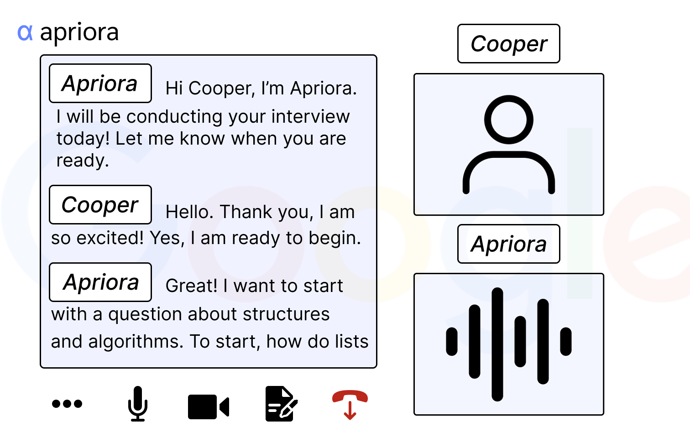
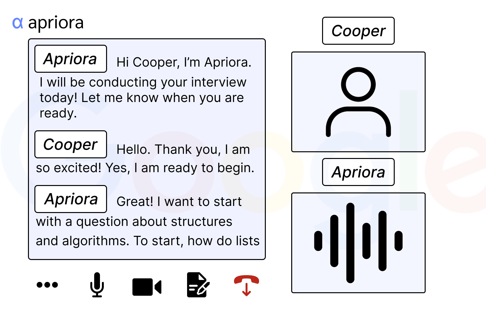

Iterative Redesign: Apriora
Overview
Apriora is a startup looking to revolutionize the way recruiters screen and interview candidates. The goal of Apriora is to utilize AI to conduct behavioral and technical interviews with candidates. This takes the brunt of the work off the shoulders of recruiters, as using AI to conduct interviews allows companies to quickly screen candidates without needing their employees to take time to conduct lengthy interviews. This product conducts interviews in a web app on a desktop, in which the user will join a video call, where the interviewer is an AI model. The candidate will be asked questions just like a normal interview. After, the interview will be analyzed and a report will be presented to the recruiter, allowing them to make judgements about the candidate.
We come in looking to iteratively design the Apriora interface based on its concept. By making sketches, creating wireframes, visiting critique sessions, and testing a Hi-Fi prototype with outside users, we will have successfully created our own design for Apriora. Through this, we hope to further the goal of Apriora as well as make this process more welcoming and an accurate replication of an interview for candidates.
Sketching and Brainstorming
The first step in this process is to brainstorm individually how the design could look, and sketching those ideas out. Take a look at the sketches the team came up with to work towards reducing time and effort for recruiters, enhance objectivity and quality in candidate evaluations, and create a smooth and human like experience for candidates
Yabeke
Nahum
Kyle S
Matt G
Wireframe
Remembering the problems we want to solve, and after putting our ideas and sketches together, we created a meeting room wireframe, a waiting room wireframe, and a scheduling screen wireframe:

First Sketch: Scheduling Screen
- We kept the availability interface to keep the product human-like, especially for candidates who may be nervous about conducting an interview with an AI bot. We plan to improve this with intuitive colors and a layout for easier use.
Second Sketch: Waiting Room Screen
- We retained key interface components like the facecam, microphone, volume control, and time indicator. While these may seem intuitive, we realized through discussion that they are often overlooked in design despite being crucial for a smooth user experience.
Third Sketch: Meeting Room Screen
- We included a dual transcript feature to ensure clarity during the interview, allowing both parties to reference what was said in real time.
- We also made sure to keep the interviewee’s face visible to add a human touch.
- One point we’re still exploring is how the AI should visually appear. More specifically, whether this AI should appear as a human-like figure or with no face at all. This is very important, as it heavily impacts user comfort and how realistic the interview is.
Overall, our design choices aim to balance a clean, professional look with straightforward usability, aligning with our group’s goal of making the AI interview experience feel as natural and accessible as possible. The wireframes are black & white by design — to focus on layout, structure, and core functionality before styling.
Time for Critiques
When we attended a critique session, we got valuable feedback to take into the next step of building our Hi Fi-Prototype.
- Add more branding relating to the company conducting interviews
- Add customization options for each company
- Think deeply about how navigating between screens should feel
- Add more screens in the prototype demonstrating the recruiter’s experience setting up interviews since that was one of the problems we are trying to solve
- Make sure the Hi Fi-Prototype is more professional looking
These critiques went a long way into the look of our Hi-Fi Prototype. We especially focused on creating an experience from the perspective of a recruiter.
Here's what we implemented into our prototypes based on our critiques:
- Added three screens demonstrating the recruiter perspective
- Ability for recruiters to customize logo, colors, and AI name
- Made icons and colors consistent with each other
- Added responsive elements, like button hover, camera toggle, scrollable elements, and multi-screen navigation
 
